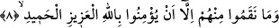

Birbirlerine şâhidlik ediyorlardı. Âyette yer alan “şühûd” kelimesi, “şâhid”
kelimesinin çoğuludur. Buna göre âyete mânâ verirsek şöyle deriz: Onlar kralın yanında
birbirlerine şâhidlik ediyorlar, en ufak bir acıma ve merhamet duymaksızın, emredildiği
şekilde mü’minleri yakmakta hiç kimsenin kusur etmediğini söylüyorlardı.
Âyet-i kerimeye şöyle bir mânâ vermek de mümkündür: Onlar kıyamet günü
mü’minlere yaptıklarına şâhidlik edeceklerdir. Bir başka ifâdeyle kıyamet günü dilleri,
elleri ve ayakları yapmış oldukları işkence konusunda onların aleyhlerinde şâhidlik
edeceklerdir. Âyetin ifâde akışının gerektirdiği ve meşhur rivâyetlerin ifâde ettiği mânâ
bu sonuncu mânâdır. Bazı âlimler burada ifâde edilen zorbaların mü’minleri ateşe atıp
da kendileri onun etrafında oturduklarında ateşin onlara yapıştığını, bazı rivâyetlerde
ise kırk arşın üzerlerine çıktığını ve sonra onların üzerine dökülerek kendilerini
yaktığını ve Allah’ın mü’minleri sağ-sâlim kurtardığını ifâde eder. Zaten kötü hile ancak
onu kuran kimsenin başına patlar. Allah Teâlâ onlara daha ateş değmeden kendilerinin
ruhlarını almıştır. Nitekim aynı uygulamayı -daha önce geçtiği üzere- Fir’avn’un karısı
Asiye’ye de yapmıştı. Nitekim bundan sonra gelen onuncu âyetteki “şüphesiz inanmış
erkeklerle, inanmış kadınlara işkence edip sonra tevbe etmeyenlere Cehennem azabı ve
yanma cezâsı vardır” âyeti bu şekilde tefsir olunmuştur. Yani onlara âhirette
Cehennemde yanma cezâsı, dünyada da yakılma cezâsı vardır.
Bu âyette ayrıca Allah’a karşı gelen, azgınlaşan, hakkın huzurundan kaçan nefse
işâretler vardır. Yine bu âyette böyle bir nefsin ateş, hızlan (yardımdan mahrum kalmak)
ve hüsran çukurlarına lâyık olduğuna, bu çukurlarda onların kötü ahlaklarının
odunlarıyla tutuşturulmuş ateş olduğuna işâretler vardır. Yine bu ateşin onların nefsî ve
hevaî pis vasıflarının taşlarıyla tutuşturulduğuna da işâretler vardır. Çünkü onlar o
ateşin üzerinde oturmuşlar, şehvetleri işleyerek kendi zatlarına, nefislerine, heva ve
heveslerine, tabii güçlerine dönerek oturduklarına işâretler vardır. Yine birbirlerine
ruh, sırr, kalp mü’minlerine yaptıkları fiiller hakkında şâhidlik edeceklerine, o
mü’minlere karşı işledikleri muhalefette mücadeleye ve muhasamaya şâhidlik
edeceklerine işâretler vardır.
8. Onlardan, sırf, azîz ve hamîd olan Allah’a îman ettikleri için intikam aldılar.
Kâfirler o mü’minleri, azîz ve hamîd olan Allah’a îman ettikleri için ayıpladılar ve
yaptıkları davranışı uygun görmediler. Âyette “nekamu” şeklinde geçen fiilin kökü
“herhangi bir şeyi ayıplamak ve çirkin görmek” demektir.
Müfredat’ta şöyle denilir: Arapçada “nekamtu’ş-şey’e” dendiğinde mânâsı “herhangi
bir şeyi dil ile kınamak veya cezâ vermek sûretiyle hoşgörmemek” demektir.
Kâfirlerin mü’minleri ayıplamaları, dilleriyle kınayarak ve cezâ uygulayarak